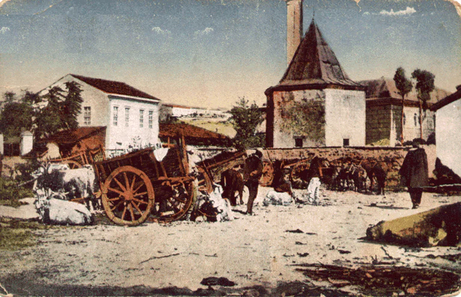

Multimedijski CD-ROM · 2001
Staro Skopje
Mesto skozi stare fotografije, filme in spomine: od rimskega Scupija do potresa leta 1963.
 Stari orientacijski zemljevid38 znamenitosti na starem načrtu
Stari orientacijski zemljevid38 znamenitosti na starem načrtu Filmsko gradivo35 dokumentarnih posnetkov
Filmsko gradivo35 dokumentarnih posnetkov KronologijaPomembnejši dogodki skozi zgodovinoAvdio tabela112 obdobij s pripovedovanim zapisom
KronologijaPomembnejši dogodki skozi zgodovinoAvdio tabela112 obdobij s pripovedovanim zapisom Zgodovina10 zgodb in starih slik
Zgodovina10 zgodb in starih slik Arheologija45 najdb
Arheologija45 najdbRazglednice
 Akvadukt4 razglednice
Akvadukt4 razglednice Kale30 razglednic
Kale30 razglednic Mostovi60 razglednic
Mostovi60 razglednic Nabrežje58 razglednic
Nabrežje58 razglednic Trg46 razglednic
Trg46 razglednic Stavbe66 razglednic
Stavbe66 razglednic Krščanski templji19 razglednic
Krščanski templji19 razglednic Muslimanske stavbe33 razglednic
Muslimanske stavbe33 razglednic Oficirski dom29 razglednic
Oficirski dom29 razglednic Gledališče28 razglednic
Gledališče28 razglednic Železniška postaja13 razglednic
Železniška postaja13 razglednic Šole36 razglednic
Šole36 razglednic Parki12 razglednic
Parki12 razglednic Tržnice18 razglednic
Tržnice18 razglednic Ulice38 razglednic
Ulice38 razglednic Panorama I60 razglednic
Panorama I60 razglednic Panorama II30 razglednic
Panorama II30 razglednic Kolaži55 razglednic
Kolaži55 razglednic Poplave9 razglednic
Poplave9 razglednic Potres27 razglednic
Potres27 razglednic Skopje 200026 razglednic
Skopje 200026 razglednic